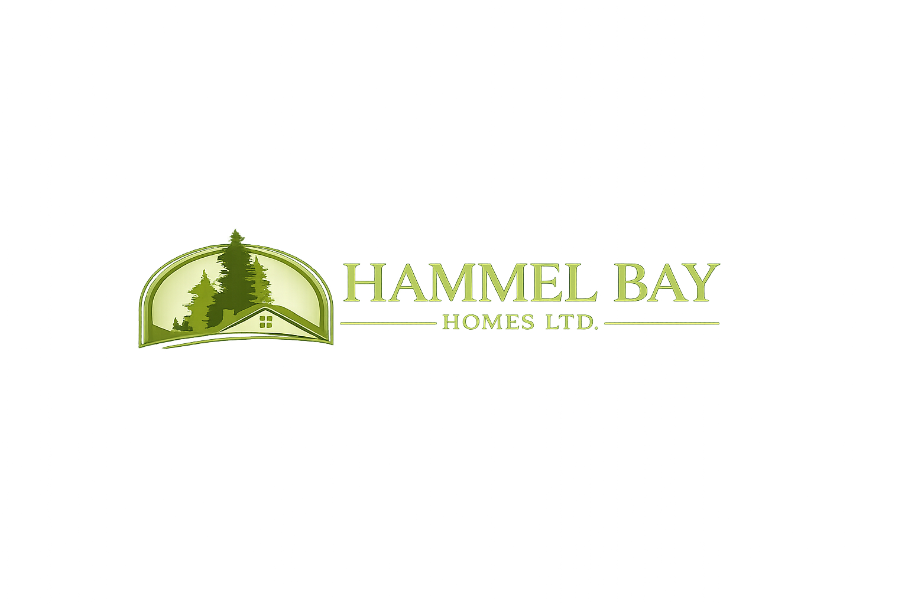

Professional Excavation for Cottages and Residential Properties
Serving Huntsville • Bracebridge • Lake of Bays • Gravenhurst
Request a QuoteHammel Bay Homes provides reliable mini excavation services throughout the Muskoka region. Based in Utterson, we work with homeowners, cottage owners and contractors who need excavation work completed safely and efficiently.
Our Bobcat 5.5-ton mini excavator is ideal for projects where larger excavation equipment cannot easily access the property. We specialize in small to mid-size excavation jobs including trenching, drainage improvements and driveway preparation.
Trenching for water lines, hydro conduit, septic systems and drainage pipes.
Excavation and grading to improve drainage around cottages and driveways.
Installation and replacement of driveway culverts for proper water flow.
Excavation and grading for gravel driveways and cottage access roads.
Excavation for garages, additions, decks and small structures.
Removal of small to medium tree stumps and lot clearing.
Mini excavators are ideal for Muskoka properties where space may be limited by trees, terrain or cottage structures. They allow precise digging with minimal disturbance to the surrounding landscape.
Our equipment can efficiently handle trenching, drainage improvements, driveway excavation and other small excavation jobs common to Muskoka cottage properties.